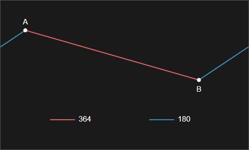
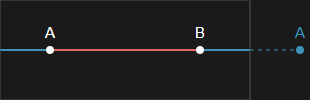

2点間距離（ループ対応）
解説/アルゴリズム

上記例で見ると、点 AB の2 点間距離は赤線になりますが、外側がループしている条件なら青線も 2 点間距離になります。
この条件の場合、通常は赤線と青線の短い方を 2 点間距離として採用しますので、その値の求め方を解説します。
計算は軸ごとに行うので、まず x 軸の場合について解説します。

内側の赤線と外側の青線の長さの小さい方を x 軸の長さとして採用します。
赤線の長さの計算は A と B の差の絶対値を取ればいいでしょう。
外側の青線は 2 本あるので別々に計算して総和を求めてもいいですが、左側にある点に幅の長さを足した位置を求め、そこから右側の点までの距離が青線の長さと同じになるので、それを求める方法があります。
// 2点のうちどちらが左でどちらが右になるかを計算
const minX = Math.min(x0, x1); // 左
const maxX = Math.max(x0, x1); // 右
// 内側（赤線）の距離と、外側（青線）の距離のうち、小さい方をx軸の長さとして採用。
const dx = Math.min(maxX - minX, minX + width - maxX);
x 軸の計算例です。
y 軸も同様に計算し、求めた x と y の長さで三平方の定理を使用して 2 点間距離を求めます。
コード例
function getDistance(
x0: number,
y0: number,
x1: number,
y1: number,
width: number,
height: number
): number {
const minX = Math.min(x0, x1);
const maxX = Math.max(x0, x1);
const minY = Math.min(y0, y1);
const maxY = Math.max(y0, y1);
const dx = Math.min(maxX - minX, minX + width - maxX);
const dy = Math.min(maxY - minY, minY + height - maxY);
return Math.sqrt(dx * dx + dy * dy);
}